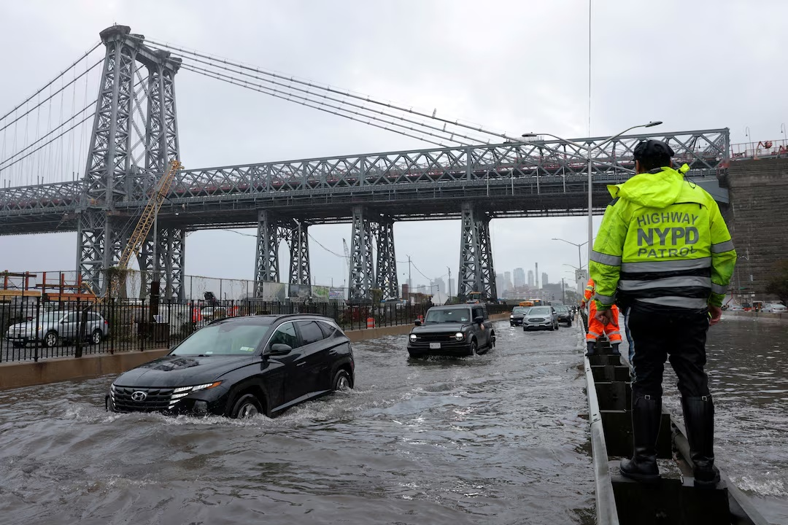

01｜
强东北风暴袭击纽约，州长宣布进入紧急状态
一场强东北风暴周五晚起正面袭击纽约及三州地区，纽约州长霍楚已对纽约市、威斯特切斯特县及长岛宣布进入紧急状态。截至周六，纽约州逾2.3万户用电中断，纽约市约2500户断电；风暴带来阵风最高50英里/小时、降雨最多3英寸，沿海地区可能出现最深达3英尺的洪水，且因周六恰逢满月大潮，多轮高潮周期的洪水风险将持续至周日。原定周六在中央公园举行、预计吸引逾5万人的“全球公民音乐节”已宣布取消。
来源｜路透社

图｜东北风暴影响纽约交通，车辆涉水通行。图片来源｜REUTERS观察｜
这场风暴的关键风险点不是降雨量本身，而是“满月大潮叠加多轮高潮周期”这个组合——沿海低洼地区可能反复受淹，而不是一次性过境。对皇后区南部、布鲁克林南部及长岛的华人家庭和餐饮商户而言，周日之前的每一次高潮时段都值得提前留意，冰箱冷柜的备用电力和周末营业安排比等风暴“过去”再评估更实际。
02｜
LaGuardia机场周五约六成航班延误，MTA周六起禁止部分卡车过桥
据美联社报道，受东北风暴影响，纽约拉瓜迪亚机场周五约600架次航班延误，占当日航班量近六成，肯尼迪机场也出现大规模延误和取消。MTA同时宣布，因大风天气，自9月26日凌晨12点至9月27日凌晨2点，桥梁隧道管理局禁止部分卡车通行；截至周五新闻发布会，MTA表示暂无计划停运地铁，但会根据风力情况随时调整户外轨道路段的运营。
来源｜美联社
观察｜
JFK是纽约华人往返亚洲及接送国际航班的重要枢纽，肯尼迪机场同样出现大面积延误和取消，意味着有亚洲航线行程或需要接送亲友的华人家庭，应提前联系航空公司确认前序航班状态，而不是按原计划直接前往机场。对依赖通勤或货运的企业而言，“暂无计划停运地铁”和“随时可能调整”这两句话放在一起，说明MTA目前采取的是“边观察边应对”的策略，提前预警时间往往有限。
03｜
市议会通过J-51税收减免改革，部分合作公寓与共管公寓纳入
纽约市议会9月24日通过Int. 1015-A，拟将J-51税收减免项目延长，覆盖2026年6月30日至2036年6月30日前完成的符合条件工程，并将部分合作公寓（co-op）和共管公寓（condo）纳入适用范围。符合条件的co-op和condo平均每户评估价值须低于6万美元，该门槛此后随通胀调整；符合资格的业主最长可在20年内抵扣最高100%的合理工程成本。市议会表示，新制度最多可能覆盖约30万套co-op和condo及符合条件的出租住宅。
来源｜纽约市议会
观察｜
对法拉盛、布鲁克林南部等区域拥有co-op、condo或其他住宅物业的华人家庭和小型业主而言，最值得做的不是看到“J-51减税”就判断自己可以申请，而是先核对楼宇类型和平均每户评估价值是否符合条件。对物业管理公司和业主委员会而言，真正值得关注的是未来符合规定的改造工程，是否可以纳入最长20年、最高100%合理工程成本的抵扣范围。
04｜
房东集团起诉纽约市租金指导委员会，指控马姆达尼不当干预冻结决定
据Gothamist报道，七家有限责任公司近日对纽约市租金指导委员会（RGB）提起诉讼，指控该委员会在做出两年期租金冻结决定时忽视了业主成本数据，并称市长马姆达尼对这一本应独立运作的委员会决策过程构成不当干预；曼哈顿最高法院法官此前已要求二十多名市府高级官员及RGB成员交出相关通信记录。
来源｜Gothamist
观察｜
对纽约的华人租客和小型房东而言，“房东起诉RGB”不等于“租金冻结政策已经暂停”——在法院作出新的命令或政策正式发生变化之前，10月1日起签订或续签的租金稳定合同仍应按当前有效规则执行。真正需要继续跟踪的是法院审查通信记录后，是否会对冻结政策的最终合法性作出新的判断。


评论
你今天最关注哪一条？